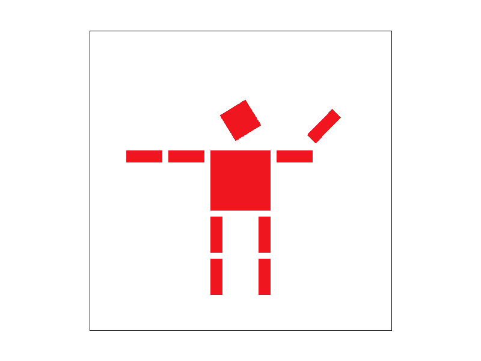

Here's the approach I adopted for rasterizing triangles in my project:
1. Determining the Bounding Box: The initial step involved calculating the bounding box for the triangle, which is essentially the smallest rectangle that fully encompasses the triangle. This required identifying the lowest and highest x and y coordinates from the triangle's vertices.
2. Iterating Through Pixels Within the Box: Once I established the bounding box, I proceeded to iterate over each pixel within this confined area. The goal here was to assess whether each pixel resides within the boundaries of the triangle.
3. Employing Barycentric Coordinates for Inclusion Testing: To ascertain whether a pixel falls inside the triangle, I utilized barycentric coordinates. These coordinates are instrumental in providing a measure of proximity and directionality of a point relative to the triangle's vertices.
4. Filling Pixels Appropriately: Upon confirming a pixel's inclusion within the triangle through the barycentric coordinate assessment, I colored it accordingly. This involved setting the pixel's color in the framebuffer, utilizing a temporary buffer in scenarios involving supersampling.
This methodology was chosen primarily for its efficiency. Concentrating on the bounding box significantly reduced the number of pixels needing examination, avoiding unnecessary checks for pixels lying outside the triangle's immediate area. Moreover, the utilization of barycentric coordinates for the point-in-triangle test proved to be computationally economical. It allowed for straightforward arithmetic operations, bypassing the need for intricate geometric computations such as line intersections or distance measurements.
To integrate supersampling, here are my steps:
1. Sub-Pixel Grid Creation: Initially, I subdivided each pixel into a finer grid of sub-pixels, determined by the sample_rate. For example, a sample_rate of 4 meant dividing each pixel into a 2x2 grid of sub-pixels. This granularity allowed for more detailed color information to be captured and processed, laying the groundwork for effective antialiasing.
2. Enhanced Sample Buffer: To accommodate the detailed color data from each sub-pixel, I expanded the sample buffer's capacity significantly beyond the original frame buffer's size. This expansion was crucial to ensure that every sub-pixel's color data could be stored and processed, a step that required adjusting the buffer's initialization to align with the width, height, and sample_rate.
3. Rasterizing with Sub-Pixel Precision: When it came to the actual rasterization of geometric shapes, such as triangles, each sub-pixel within the defined bounding box was meticulously evaluated. Utilizing barycentric coordinates, similar to traditional pixel-level rasterization, I determined whether each sub-pixel was within the boundaries of the primitive and colored it accordingly if it was.
4. Color Averaging and Framebuffer Update: Following the rasterization phase, I averaged the colors of all sub-pixels within a single pixel to derive the final color value for that pixel. This averaging process was vital for blending colors smoothly and was subsequently applied to the original framebuffer to produce an antialiased image that significantly reduced the appearance of jagged edges.
The application of supersampling proved immensely beneficial for antialiasing, smoothing out the "jaggies" that typically mar diagonal or curved lines in rasterized images. This approach, by analyzing and averaging multiple samples per pixel, yielded a more refined color gradient along edges and markedly improved the overall image quality.
1. Incorporating supersampling required a few critical modifications to the traditional rasterization pipeline:
Augmenting the Sample Buffer: I had to increase the sample buffer's size to store extensive color data for each sub-pixel, a step that necessitated adjustments in how color values were initialized and managed.
2. Adapting to Sub-Pixel Level Rasterization: I tailored the rasterization functions to process at the sub-pixel level, ensuring each sub-pixel's position was accurately evaluated in relation to the geometric primitive.
3. Implementing Color Averaging: Finally, I introduced an additional phase to average the sub-pixels' colors within each pixel for transitioning from high-resolution sample data back to the conventional lower-resolution framebuffer format.
By evaluating each sub-pixel within a triangle's bounding box using barycentric coordinates for heightened precision, and then averaging the color values of these sub-pixels, I was able to apply supersampling for antialiasing. This approach elevated the visual quality of the rendered images and showcased the advantages of supersampling in producing smoother, more visually appealing graphics.
I rotated the right arm and made the person waving.
In a triangle with vertices A,B, and, C, each vertex is assigned a distinct color: A is red, B is green, and C is blue. Any point P inside or on the boundary of this triangle can be represented through barycentric coordinates as a combination of A,B, and C, with weights α, β, and γ respectively. These weights indicate how much of each vertex's attribute (in this case, color) contributes to the point's attribute.
The weights α, β, and γ are non-negative.
The sum of the weights is always 1 (α+β+γ=1).
Pixel sampling decides how texture information is mapped onto geometric primitives like triangles or polygons in a 3D scene. The essence of pixel sampling lies in selecting the appropriate color value from a texture map based on the texture coordinates (u, v) associated with a pixel or a sample on the primitive.
Pixel Sampling Methods
1. Nearest Neighbor Sampling (sample_nearest):
This method selects the color of the nearest texel (texture pixel) to the specified texture coordinate. It's a straightforward approach that involves rounding the floating-point texture coordinates to the nearest integer texel coordinates and retrieving the color of the texel at those coordinates. While simple and fast, nearest neighbor sampling can lead to a blocky appearance, especially in cases where the texture is magnified significantly relative to the screen space.
2. Bilinear Interpolation Sampling (sample_bilinear):
Bilinear interpolation takes into account the colors of the four nearest texels surrounding the specified texture coordinates and performs a weighted average of these colors based on the proximity of the texture coordinates to each texel's center. This method results in smoother transitions between texels and reduces the blocky appearance typical of nearest neighbor sampling. Bilinear sampling is more computationally intensive than nearest neighbor sampling but offers significantly better visual quality for textures, especially when they are magnified or viewed at oblique angles.
Nearest Sampling at 1 Sample per Pixel: This will likely show a blocky or pixelated texture, especially noticeable in areas where the texture map has high-frequency detail or when viewed at an angle.
Nearest Sampling at 16 Samples per Pixel: Increasing the sample rate may reduce aliasing to some extent but will retain the pixelated appearance of the texture due to the inherent nature of nearest neighbor sampling.
Bilinear Sampling at 1 Sample per Pixel: Even at a single sample per pixel, bilinear sampling will produce smoother textures and edges due to the weighted average of surrounding texels.
Bilinear Sampling at 16 Samples per Pixel: This scenario will offer the smoothest and most visually appealing texture mapping, significantly reducing aliasing and providing a more continuous texture appearance.
Bilinear sampling will always provide a smoother and more natural appearance. However, the performance trade-off becomes a consideration in real-time applications. The choice between these methods depends on the specific requirements of the application, such as the need for speed versus visual quality. Bilinear sampling is generally preferred for its superior visual quality, particularly in applications where the fidelity of the rendered scene is paramount.
Level sampling/mipmapping is a technique used in texture mapping to enhance visual quality while reducing aliasing artifacts and improving rendering performance. It is to use different resolutions of a texture (mipmaps) depending on the distance of the textured surface from the viewer or the angle at which it is viewed. This helps in handling cases where a texture is minified which can lead to Moire patterns and other visual artifacts if not properly managed.
Level sampling is implemented through the consideration of two key components in the SampleParams structure: psm (Pixel Sampling Method) and lsm (Level Sampling Method). The get_level function computes the appropriate mipmap level to use for a given texture coordinate and its derivatives. This computation takes into account the rate of change of texture coordinates across the surface, allowing the algorithm to select a mipmap level that best matches the screen space resolution of the texture.
Three level sampling modes are considered:
1. L_ZERO: This mode ignores mipmaps and uses only the base level texture for all samples. It's equivalent to not using mipmapping at all.
2. L_NEAREST: This mode selects the nearest mipmap level based on the computed level from get_level, rounding to the nearest integer. It simplifies the selection process but can result in noticeable transitions between mipmap levels.
3. L_LINEAR: This mode linearly interpolates between two nearest mipmap levels, providing smoother transitions and potentially higher visual quality at the cost of additional computation and memory access.
Trade-offs Between Sampling Techniques:
1. Pixel Sampling:
a.Speed: Nearest neighbor is the fastest due to simple integer calculations, while bilinear involves more computation.
b.Memory Usage: Relatively low, as it depends only on the texture size and not on the number of samples.
c. Antialiasing Power: Bilinear offers better antialiasing than nearest neighbor by smoothing out texel transitions, but both can suffer from moiré patterns without mipmapping.
2. Level Sampling (Mipmapping):
a. Speed: Generally faster than using high-resolution textures for all distances, as it reduces texture cache misses and the amount of texture data processed.
b. Memory Usage: Higher than using a single texture because mipmaps require additional storage, typically 1/3 more than the base texture.
c. Antialiasing Power: Significantly reduces aliasing at distant or steeply angled surfaces by selecting appropriate mipmap levels, but may require linear interpolation between levels for the best results.
3. Number of Samples per Pixel (Supersampling):
a. Speed: Significantly slower, as it requires rendering the scene multiple times at higher resolutions or processing multiple samples per pixel.
b. Memory Usage: Increases with the number of samples, as each sample may require separate texture lookups and storage for intermediate colors.
c. Antialiasing Power: Offers the highest antialiasing quality by averaging multiple samples per pixel, effectively smoothing out edges and reducing aliasing artifacts across the board.